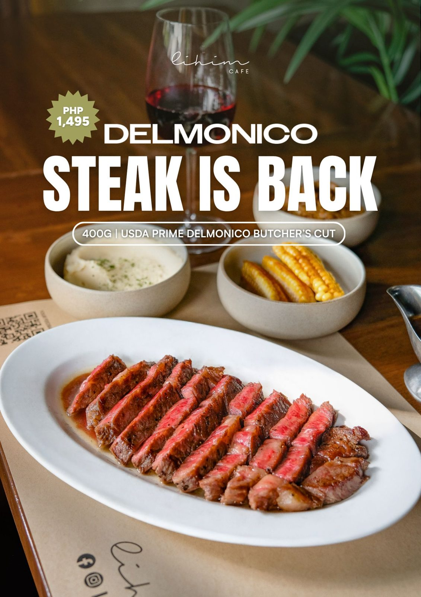
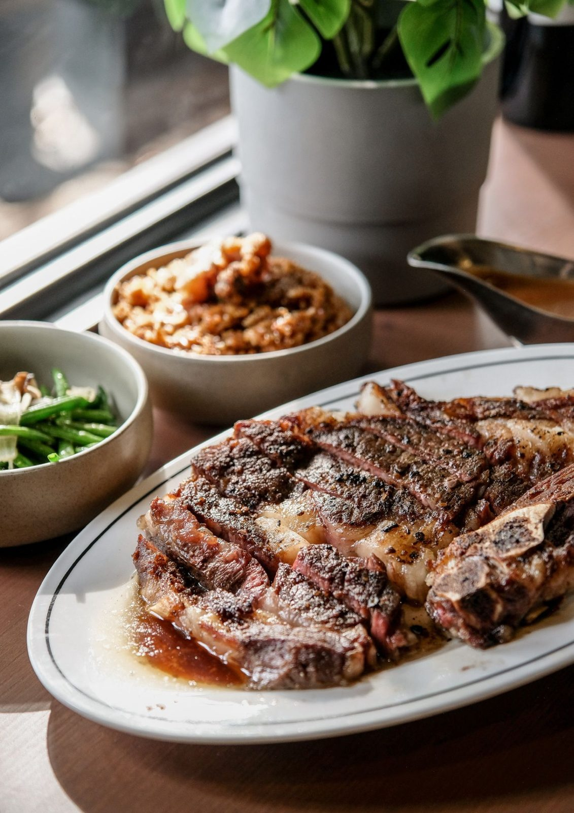
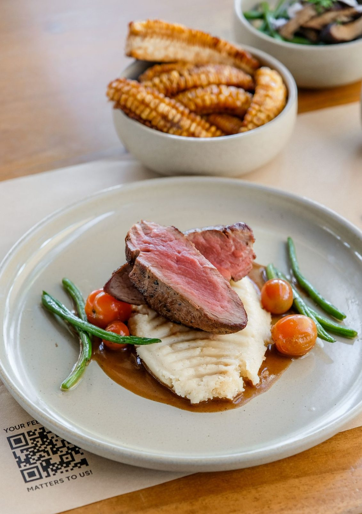
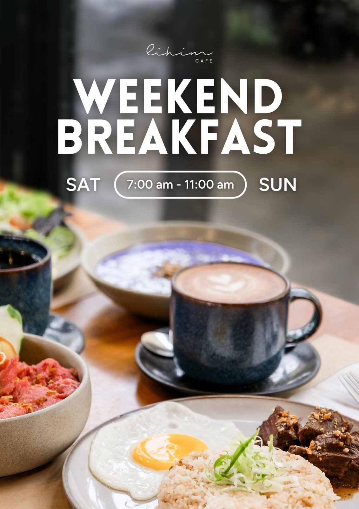
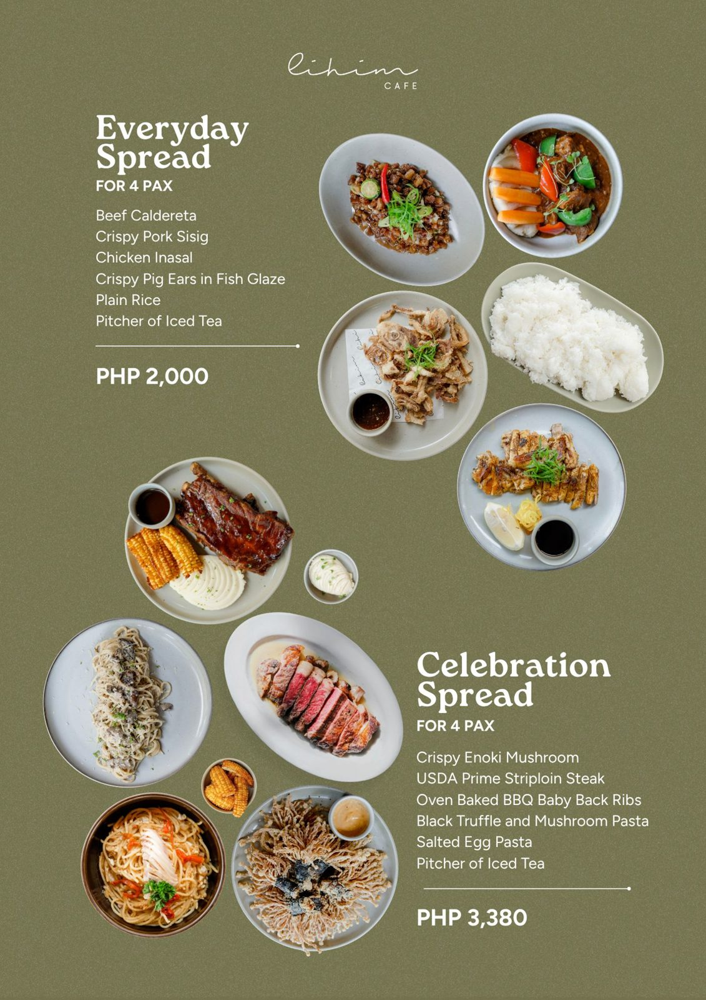

Delmonico steak
The 400g USDA Prime Delmonico butcher's cut is back on the menu.

lihim
A hidden garden café inside Gunita Villas, ten minutes from Padre Pio Shrine.

You reach us through the villas, past tall trees and ornamental plants, and the road noise fades. Inside, glass panels let the garden in. Outside, you can eat al fresco in the Batangas breeze.
The kitchen cooks slow and generously: Angus beef braised for hours, baby back ribs, Filipino classics like belly kare-kare, and a weekend breakfast worth waking up for.

The 400g USDA Prime Delmonico butcher's cut is back on the menu.

Saturday and Sunday from 7:00 to 11:00 am. Silog plates, ube champorado and pancakes.

The Everyday Spread and the Celebration Spread each feed four. Food trays are available for parties.
Lihim Café, inside Gunita Villas and Pavilion
Santo Tomas–Lipa Road, Santo Tomas, Batangas
Pin “Gunita Villas and Pavilion” in Google Maps.
Open in Google Maps